A showcase of creativity, strategy, and results explore the projects that define us.
Subjects
Brand identity, Digital design
Where
Krosno, Poland
When
6 - 14 April 2025
From April 6–14, 2025, Krosno became the hub of creativity,
sustainability, and international friendship
through EcoArt: Turning Trash Into Treasure,
an Erasmus+ Youth Exchange organized by Fundacja Patrz Globalnie.
The project brought together 28 young people from Poland, Hungary, Lithuania, and Romania,
, to address one of today’s most pressing issues: non-biodegradable waste.
Our mission was clear - transform trash into art, raise environmental awareness, and
inspire action through creativity.
Beyond just workshops, EcoArt offered participants the opportunity to develop digital skills, embrace AI-powered creativity, and engage in inclusive, intercultural learning.
One of the project’s highlights was an educational visit to MPGK Krosno,
the city’s municipal waste management and recycling center.
Here, we explored the entire waste processing cycle,
from sorting recyclables to treating organic waste, and
discovered how advanced composting and fermentation systems
produce biogas and renewable electricity.
At the center’s interactive Education Point, we
learned how small lifestyle choices affect the
environment and experienced firsthand how circular economy
principles operate in practice.
For many,
this visit was an eye-opener, bridging the gap between theory and real-world solutions.
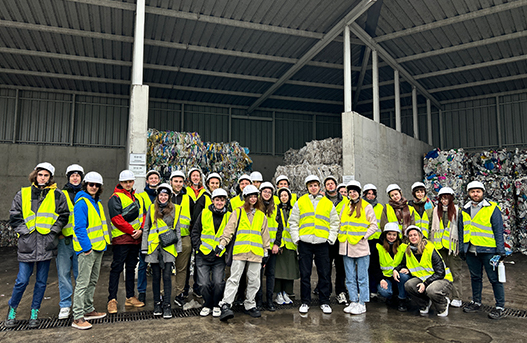
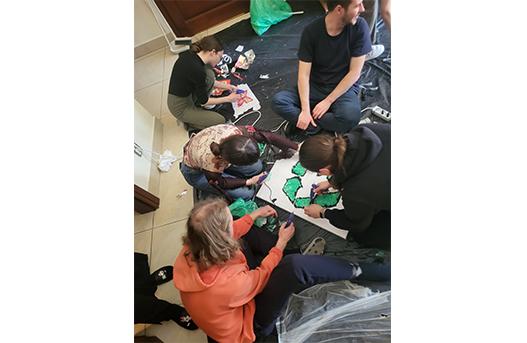
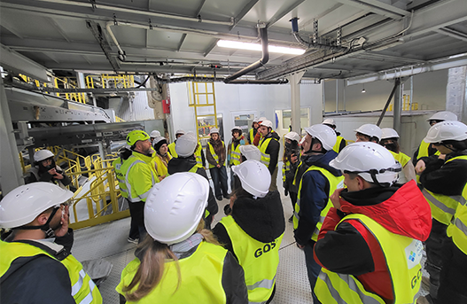
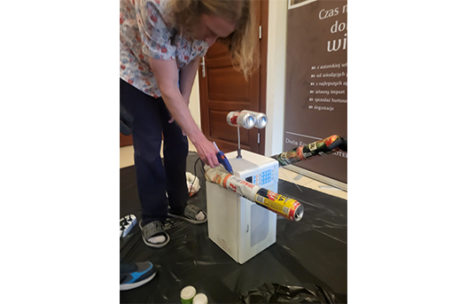
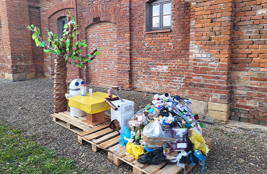
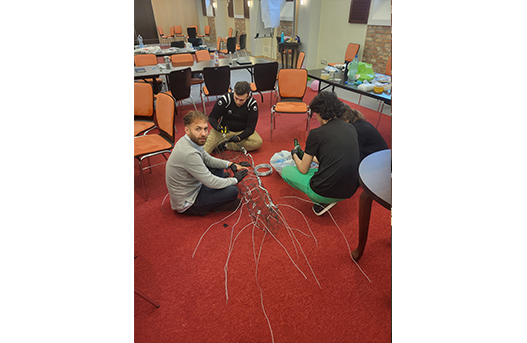
Back at our workshop space, creativity flourished as participants rolled up their sleeves and turned discarded materials into art. From colorful mosaics and playful toys to thought-provoking sculptures, every piece told a story of transformation and hope. Guided by facilitators and inspired by local artist Piotr Burger, participants discovered how upcycling can become an educational tool and a powerful message about environmental responsibility. Piotr praised the works for their playful forms and strong themes, saying they could be a key element in teaching younger generations about sustainability.
To share these powerful messages with the community,
we organized a public event at the Krosno Youth Centre
,together with Piotr Burger,
attracting over 100 attendees ,
including local youth and children from orphanages.
Participants proudly exhibited their creations,
explained the concept behind each piece,
and led interactive activities promoting recycling and creative reuse. Piotr also brought
some his creations, and inspired us for our future endeavours.
This event proved that art can be more than decoration, it can spark dialogue,
educate, and inspire change.
Our works now remain on permanent display at the MPGK Education Point,
ensuring EcoArt’s impact continues well beyond the project.
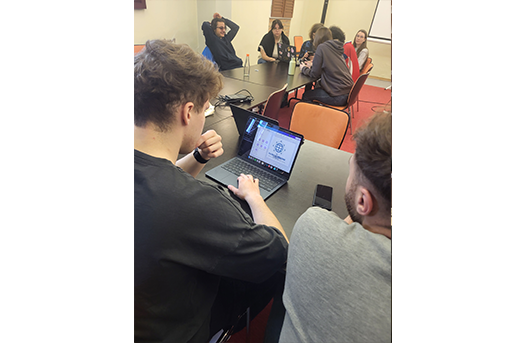
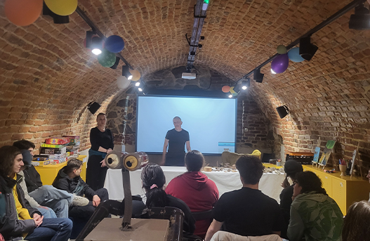
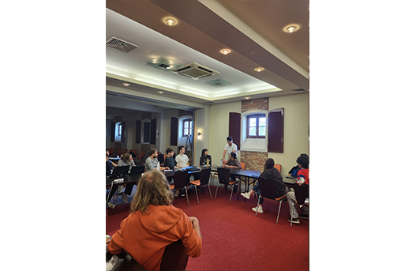
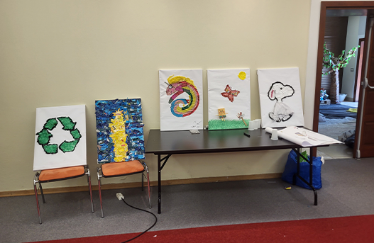
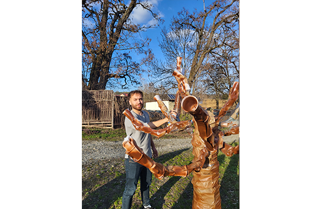
Beyond environmental action, EcoArt was also about people and culture.
Through engaging intercultural evenings, traditional foods, shared dances, we
and learned about each other’s heritage.
These moments of laughter and exchange created friendships that crossed borders and broke stereotypes.
Together, we didn’t just create art, we built a community of young changemakers
, ready to take these ideas home and launch future initiatives like our upcoming
Green Week campaign in schools.
EcoArt proved that when creativity meets responsibility, trash truly can become treasure.
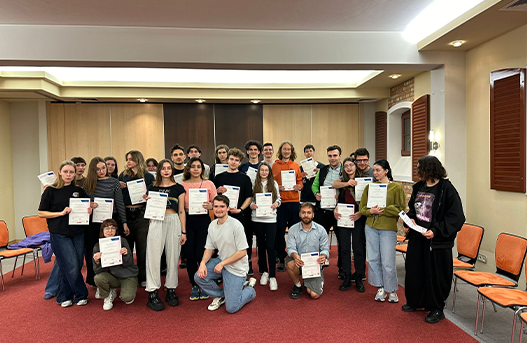
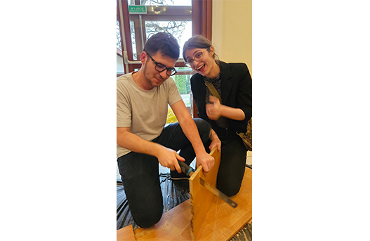
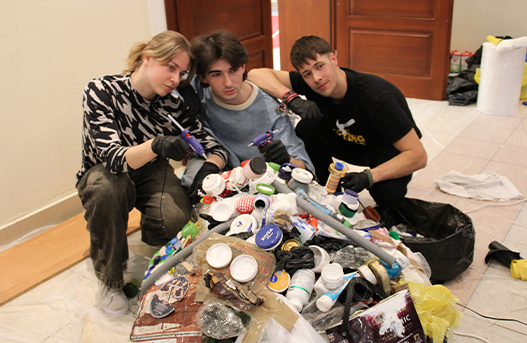
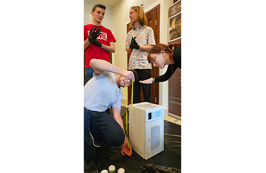
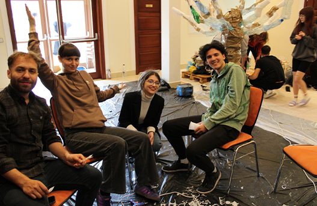
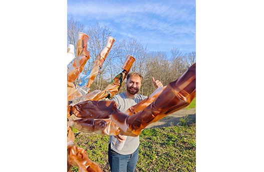
EcoArt was more than a project, it was a movement toward creativity,
sustainability, and unity.
We are proud of the impact it created in Krosno and beyond,
and deeply grateful to everyone who supported and amplified our message.
Special thanks go to the local media and institutions who shared our story,
helping us spread awareness and inspire more people to act for the planet.
Your coverage ensures that the voices of young changemakers are heard far and wide.